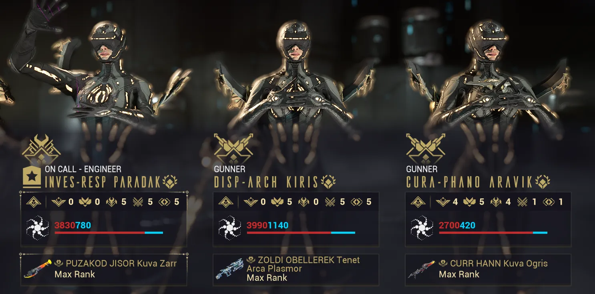

Railjack Optimization
Table of Contents
Overview
This guide touches on the major Railjack systems and provides practical recommendations for getting the most out of your Railjack. The goal of this is to give you a clear guideline to an optimized Railjack setup that can comfortably cruise through anything up to Veil Proxima missions.
Components
Your Railjack has 4 main components: Shields, Engines, Plating, and Reactor. The following subsections cover each of these parts.
Component stats have ranges because Railjack parts use the same Valence Fusion system as adversary weapons. Check out the Valence Fusion guide for tips on maxing gear in the fewest fusions. When valence fusing Railjack parts, parts do not need to be of the same tier or fully repaired first. You can fuse scrap parts to built ones at 40% crafting cost, and lower tier parts can be fused for a smaller fusion percentage gain.
All stats listed are for MK3 parts (the highest tier). MK3 parts can also roll special traits, which are covered in each section below.
Shields
House Lavan shields have higher shield values while House Zekti shields have faster recharges and more offensive trait options. For tankier builds, House Lavan shields with the "+1000% energy consumed as shields" trait is great. For a damage oriented build, House Zekti shields with the 25% Railjack damage trait are the better pick.
| Sigma | Lavan | Vidar | Zetki | |
|---|---|---|---|---|
| Item Stats | ||||
| Shield Capacity | 1,500 | 1,400 - 2,000 | 1,200 - 1,750 | 1,050 - 1,500 |
| Shield Recharge Delay Reduction | 1.00s | 0.10s - 1.00s | 0.50s - 2.00s | 1.00s - 4.00s |
| Shield Recharge per second | 7.00% | 15% - 30% | 15% - 30% | 10% - 12% |
| House | Component | Trait |
|---|---|---|
| Lavan | Shield Array | Shields replenish 50x faster while cloaked |
| Lavan | Shield Array | +1000% of Energy consumed using Battle Mods is converted to Shields |
| Vidar | Shield Array | 30% of Shield Damage is diverted to increase Turret Damage by up to 300 for the next shot fired |
| Vidar | Shield Array | Every 10s shields apply an Electrical proc to all enemies within 50m |
| Vidar | Shield Array | Redirect 50 Energy to Shields with every kill |
| Zetki | Shield Array | +25% Railjack damage while shield depleted |
| Zetki | Shield Array | +10% Tenno shields on Railjack |
Engines
House Lavan engines have the highest boost speed while House Vidar engines have the highest cruise speed. However, since boosting has no cooldown or duration, you can always be boosting when you're not shooting. Since boosting is effectively 'infinite' we always aim for House Lavan engines due to their higher speeds.
Note: Vidar engines will be faster with the "+50% boost speed while shield depleted" perk, but this is very inconsistent, so I recommend choosing the Lavan engines.
| Sigma | Lavan | Vidar | Zetki | |
|---|---|---|---|---|
| Item Stats | ||||
| Engine Speed | 30 m/s | 10 - 30 m/s | 30 - 60 m/s | 20 - 40 m/s |
| Engine Boost | 0.20x | 0.30 - 0.60x | 0.05 - 0.20x | 0.10 - 0.30x |
| Equipped Stats | ||||
| Engine Speed | 180 m/s | 160 - 180 m/s | 180 - 210 m/s | 170 - 190 m/s |
| Engine Boost | 1.45x | 1.55 - 1.85x | 1.30 - 1.45x | 1.35 - 1.55x |
| Speed While Boosting | 261 m/s | 248 - 333 m/s | 234 - 305 m/s | 230 - 295 m/s |
| House | Component | Trait |
|---|---|---|
| Lavan | Engines | Tenno gain 500 overshields after being launched from the Slingshot |
| Lavan | Engines | +20% Top Speed while shields are depleted |
| Vidar | Engines | -10% Intruders armor |
| Vidar | Engines | +50% boost speed while shield depleted |
| Zetki | Engines | Shields regenerate 50% faster when Railjack is stationary |
| Zetki | Engines | +20% Tenno weapon damage onboard Railjack |
Plating
House Lavan plating gives the largest amount of effective health, but House Vidar plating is a close second. There are no special traits for MK3 Plating which means there's not really an incentive to pick anything but the best plating.
| Sigma | Lavan | Vidar | Zetki | |
|---|---|---|---|---|
| Hull (Health) | 2,450 | 4,500 - 6,000 | 3,300 - 4,400 | 3,600 - 4,800 |
| Armor | 1,625 | 2,150 - 2,688 | 2,950 - 3,688 | 2,350 - 2,938 |
| Effective Health | 15,721 | 36,750 - 59,760 | 35,750 - 58,491 | 31,800 - 51,808 |
Reactor
I recommend House Zekti MK3 reactors for the added Strength and Range. As covered in the Plexus section below, Seeker Volley is the best battle mod due to its insane damage output, and Strength buffs its damage further. For the traits, pick based on the hazard you find most annoying. Fire hazards are more common, but I went with electric hazards since I find them more inconvenient.
| Sigma | Lavan | Vidar | Zetki | |
|---|---|---|---|---|
| Duration | 15% | 40 - 60% | 20 - 40% | 0% |
| Range | 15% | 0% | 40 - 60% | 20 - 40% |
| Strength | 15% | 20 - 40% | 0% | 40 - 60% |
Note: A MK2 Zekti reactor can reach up to 80% strength but does lose out on the range and the hazard trait, which I find more valuable.
| House | Component | Trait |
|---|---|---|
| Lavan | Reactor | Equipping Lavan Hull Plating increases max Shields by 25%. |
| Lavan | Reactor | Tenno gain 50% Damage increase for 5s after being launched from the Slingshot |
| Vidar | Reactor | +100% damage immunity duration after a Major Breach is repaired |
| Vidar | Reactor | Tenno gain 50% Speed Boost for 5s when deploying their Archwing |
| Zetki | Reactor | 50% chance that an Electric Hazard will repair automatically after 5s |
| Zetki | Reactor | 50% chance that a Fire Hazard will repair automatically after 5s |
| Zetki | Reactor | 50% chance that an Ice Hazard will repair automatically after 5s |
Armaments
Nose Turret (Pilot's gun)
I recommend the Photor. It fires a hitscan heat-based laser with large amounts of punch through. It's exceptionally good at taking out Corpus crewship shield generators which are usually blocked by protective energy shields.
Swivel Turrets (Side guns)
The biggest factor for turret damage is usually travel time. Plenty of weapons like the Vort and Cryophon have great damage but will miss targets due to their low projectile speeds. As such I recommend the Talyns, Apoc or Carcinoxx. Crew also have incredible aim so they can abuse hitscan weapons to pump out lots of damage.
Run House Lavan or Vidar armaments until you reach Gunnery Rank 9. Zekti armaments have the best damage but have significantly higher heat gain, and the Gunnery Rank 9 perk lets you rapidly cool your turrets. This ends up making Zekti the best option at that point.
Ordinance
Tycho Seeker MK3. Other options are not worth considering.
Plexus
The Plexus is your personal modable console for Railjack and has 3 sections: Integrated, Battle, and Tactical. This section covers my personal modding recommendations for each section.
Integrated
Auras
You have two options:
- Onslaught Matrix (damage) - Increases turret damage when Hull is 100%, reflects damage when shields are over 80%, and provides Battle mod efficiency
- Ironclad Matrix (defense) - Increases Hull, Armor, Shields and Shield Regen for your Railjack
Speed mods
- Ion Burn - Increases boost speed
- Conic Nozzle - Increases cruise speed
Artillery
Artillery is needed to take out Crew Ships easily.
- Artillery Cheap Shot - 60% artillery efficiency (mandatory mod IMO)
- Forward Artillery - Extra damage
Other Slots
Remaining slots can go towards but it all depends on personal preference. Options include:
- Turret mods (e.g. Crimson Fugue, Turret Velocity, Hyperstrike)
- Ordinance mods (e.g. Ripload, Warhead, Ordnance Velocity)
- Other utility mods
Battle
Battle mods provide combat abilities and each plexus can fit 3: a Defensive, an Offensive, and a Super. Casting a Battle mod uses your Warframe's energy so standard energy regen methods can be used to spam abilities endlessly. As such, the ideal pilots include Lavos (no cost, just cooldowns), Protea (Dispensary), and Harrow (Thurible).
Defensive
Blackout Pulse is the best pick here. It locks down Crew Ships and lets you set up easy Forward Artillery shots.
Offensive
All three options are strong. Pick what you find most fun! I personally run Particle Ram.
Super
Seeker Volley is the best Railjack mod available. It releases a swarm of homing missiles that can easily take down multiple enemy ships at once. Phoenix Blaze and Void Hole have decent damage, but they're just nowhere near Seeker Volley's damage output.
Tactical
Tactical mods provide neat utility effects. None of these are mandatory but I recommend:
- Form Up - Brings everyone back to the Railjack
- Death Blossom - Disables turret overheating
- Void Cloak - Turn the Railjack invisible
Intrinsics
There are five main Intrinsic classes: Tactical, Piloting, Gunnery, Engineering, and Command. Each rank unlocks new perks that can affect both Railjack and regular missions. Intrinsics also give mastery points (1500 per rank).
Early Priority
- Engineering 4 - Lets you craft Artillery shells in the forge
- Piloting 1 - Unlocks boosting
- Tactical 3-4 - Lets you teleport around ship (Rank 3) and quick teleport back to ship with your Omni (Rank 4)
- Command 1-5 - Crew can fill empty spots and do basic functions. If you play in full parties, this isn't as important.
- Gunnery 1 - Enables Ordnance lock-on and target lead indicators
Mid / Late Priority
- Piloting 5 - Marks hidden derelicts which have special extra drops
- Tactical 6 - Improves energy efficiency for Seeker Volley
- Gunnery 9 - Lets you rapidly cool your overheated turrets. Lets you comfortably use Zekti weapons
- Command 9 - Unlocks the on-call crew summon that you can use in regular missions. Damage scales with enemy level so it can output a lot of damage on level 100+ missions
- Command 10 - Lets Ticker offer elite crew which have more stats and bonus perks
Note: Gunnery 10 adds aim assist when aiming down sights (ADS) along with increased heat gain while doing so. This is often called a nerf, but in practice, the heat gain is mitigated by the Gunnery 9 perk and only applies when ADS
Extras
Several intrinsics buff Archwings and Necramechs outside of Railjack missions (Piloting 8, Tactical 8, Gunnery 8, Engineering 8 and 9). These are worth picking up if you enjoy using either.
Crew
Crewmates are your replacement for other players and can repair damage (Engineers), use turrets (Gunners), or fly the Railjack (Pilots). You can get crewmates from Ticker on Fortuna once you start putting ranks into Command. Crewmates cannot be permanently lost in mission and if one dies, you'll need to return to the Dry Dock to get them back. The only way to lose a crewmate is to terminate their contract at Ticker.
My recommended crew setup is:
- Engineer (left slot)
- Gunner/Pilot (middle slot)
- Gunner (right slot)
When other players join, crew will get replaced by real players from right to left. Keeping the engineer in the left slot ensures they're the last to be replaced. The engineer will handle ship repairs and protect the ship, which makes it a very valuable role.
{kind=link}

Crew Weapons
The best weapons for crew are AOE options. Crewmates have infinite ammo so it's best to prioritize weapons with large AOEs. Good options include the Kuva Zarr, Kuva Ogris, Sporelacer, and Tenet Arca Plasmor.
Crew and on-call crew cannot benefit from arcanes, galvanized mods, conditional mods like Argon Scope, or Rivens. That means it's best to focus on maximizing crit, elementals, AOE, and fire rate. As an example, this is my Kuva Zarr build that I run on my on-call crew.
{kind=link}
Crew Stats
Crew can have 8, 10, or 12 (elite crew) competency points plus up to 3 trainable points for a maximum of 15 with an elite crew. These points are distributed across 5 stats.
- Piloting - Increases maximum Railjack speed when the crewmate is piloting
- Gunnery - Boosts turret accuracy and lowers heat accretion for the crewmate
- Repair - Increases Railjack repair time and self-healing speed
- Combat - Boosts the crewmate's weapon damage. Is additive with other %Damage mods
- Endurance - Gives crewmates extra Health and Shields
Crew Stats by Role
Engineer / On-Call
- Pure Engineer - Repair 5 > Combat 5 > Endurance 5
- On-Call - Combat 5 > Endurance 5 > Repair 5
Best Perk Options:
- Combat - +150% Critical Chance with Rifles
- Endurance - Killing an enemy heals all nearby allies by 500 over 10 seconds
Gunner
- Gunnery 5 > Endurance 5 > Repair 5
Best Perk Options:
- Gunnery - +50% damage for Vidar/Lavan/Zetki turrets
Pilot (pseudo-Gunner)
Crewmate piloting AI is a bit too slow to be worth using as an actual pilot. However, the elite crew trait "+25% speed for X engines" gives a global speed buff to your Railjack. This means we can turn a 'pilot' crewmate into a bootleg-gunner.
- Pilot 5 >> Gunnery 5 = Endurance 5
Best Perk Options:
- Piloting - +25% speed for Vidar/Lavan engines